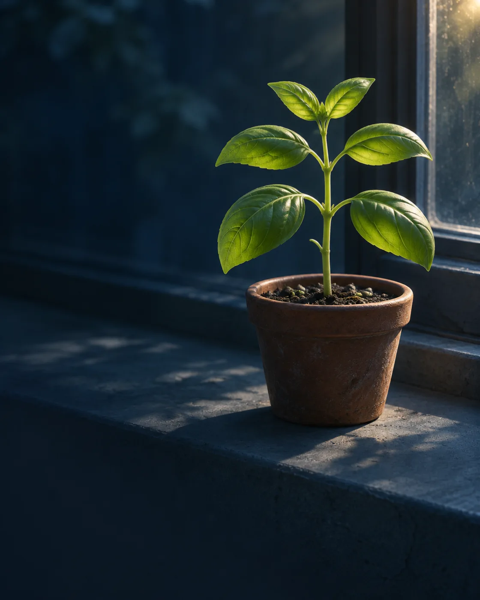

Daily photo
Houseplants during a trip
Before you travel, aim a spare phone at your seedlings. Schedule a photo each morning to see what grew while you were away.
Scheduled camera for Android
Set up an Android phone where you want to record. Schedule photos or videos before you leave, then review the results from another device with Google Drive.

How it works
Add up to 30 one-time capture times, or choose a start, an end, and an interval for a repeating schedule.
Set your camera and tap Schedule capture. With the required permissions, the camera can take photos or record 1–10 minute clips while the screen is off or locked.
Review them on your phone, or connect Google Drive to upload new captures automatically. Open the ScheduleCam folder from another device using the same Google Account.
For repeated captures with the screen off, start with intervals of 15 minutes or longer. Android power management may delay or skip captures.

Use cases
Daily photo
Before you travel, aim a spare phone at your seedlings. Schedule a photo each morning to see what grew while you were away.
Repeating photos
Before leaving the field station, aim a phone at its water-level gauge. Take photos every 30 minutes so you can see how the level changed after the rain.
One-time photos
Leave a phone at the property on your way to work. Schedule photos at 9 a.m., noon, and 3 p.m. to compare where sunlight falls over the course of the day.
Repeating photos
Start a material test before leaving the lab for the night. Review the scheduled photos the next morning to see when the surface began to change.
Repeating photos
Set up a phone at the shared print lab before working off-site. Schedule a photo every 15 minutes during a long print and open the captures from your desk in Drive.
Scheduled video
Before leaving home, aim a phone at the feeder and schedule a 10-minute video for the time birds usually arrive. Watch the clip later from another device.
Availability
Requires Android 14 or later. The app follows your device language by default. You can also choose a language in the app.
The public listing is currently unavailable.
ScheduleCam has no planned iOS release. iOS prevents apps from starting scheduled camera captures in the background while the screen is off or the device is locked.
Apple’s camera documentation